Il mio portfolio
Qui puoi trovare alcuni dei miei lavori ma ti ricordo che ogni progetto viene ideato su misura, affinchè ognuno possa raccontare ed esprimere la propria storia.
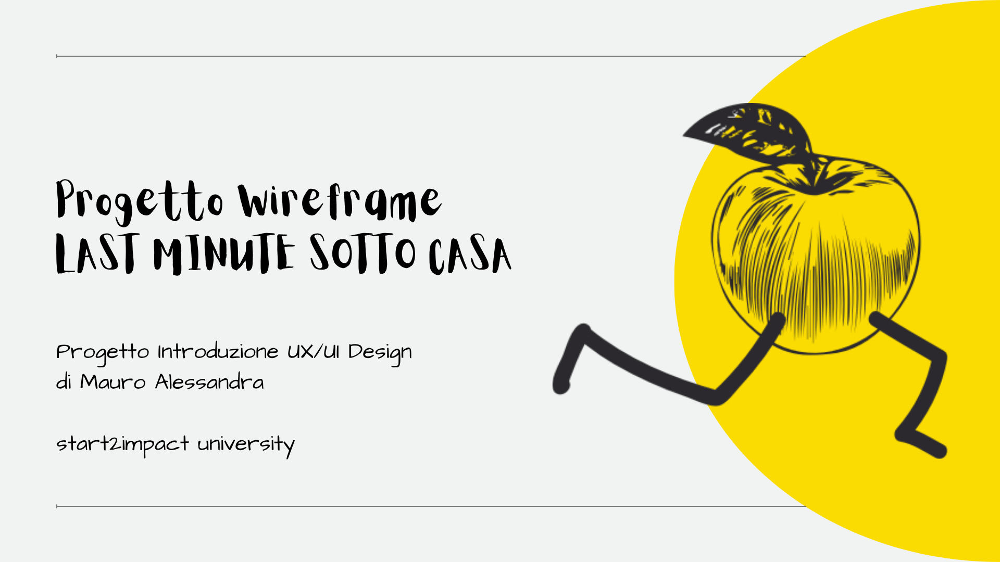
Progetto introduttivo: Wireframe x LMSC
Progetto di introduzione al UX/UI Design con la progettazione dello "scheletro" dell'interfaccia grafica di una pagina web.
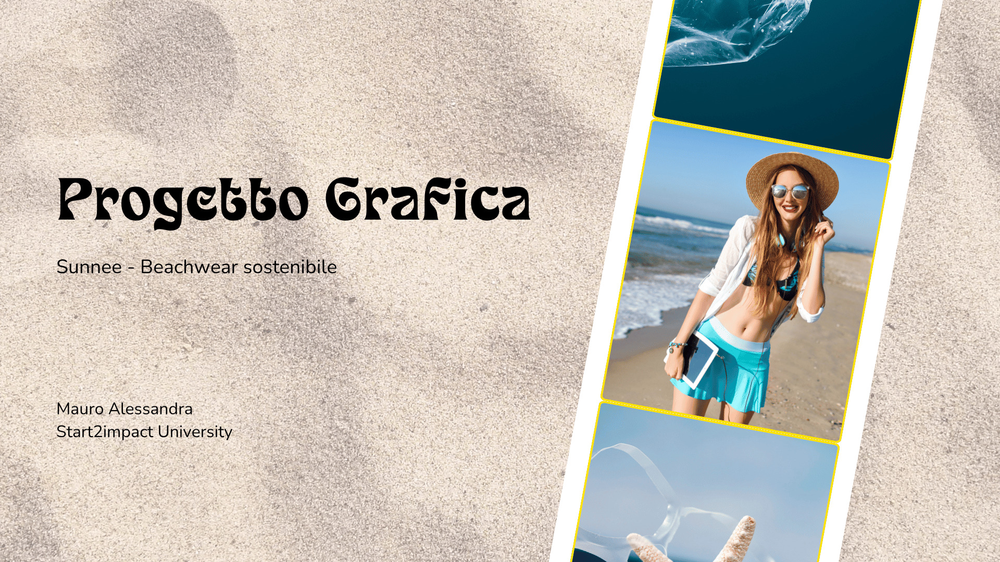
Progetto Grafica x Sunnee
Progetto di grafica con la definizione della strategia visiva e la creazione di grafiche per i social.
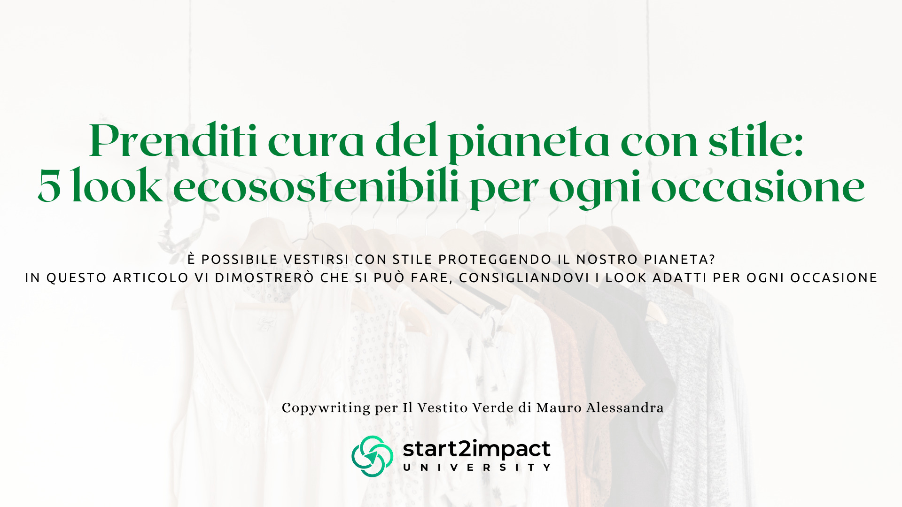
Progetto Copywriting x Il Vestito Verde
Progetto di copywriting con la creazione di un articolo per il web.
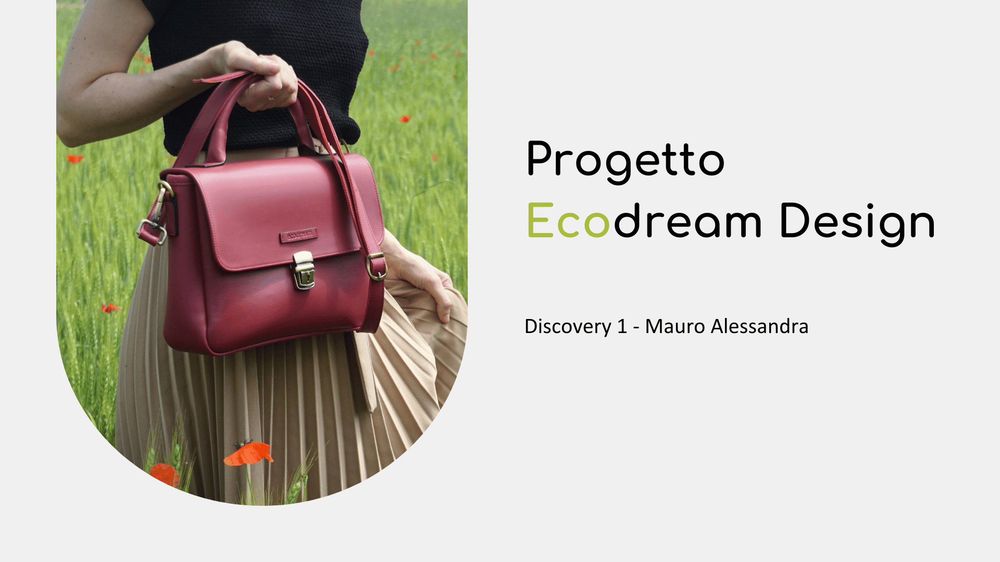
Progetto Discovery 1 x Ecodream Design
Prima parte del progetto di discovery con l'analisi di un sito web e la ricerca sulle persone interessate.
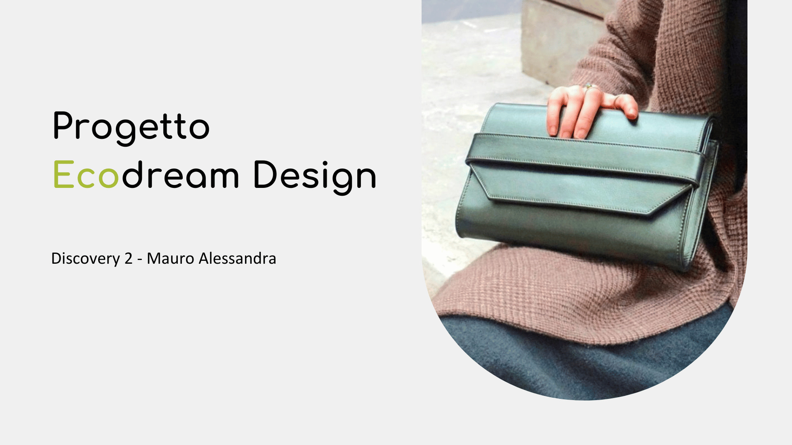
Progetto Discovery 2 x Ecodream Design
Seconda parte del progetto di discovery con l'analisi di un sito web e la ricerca sulle persone interessate.
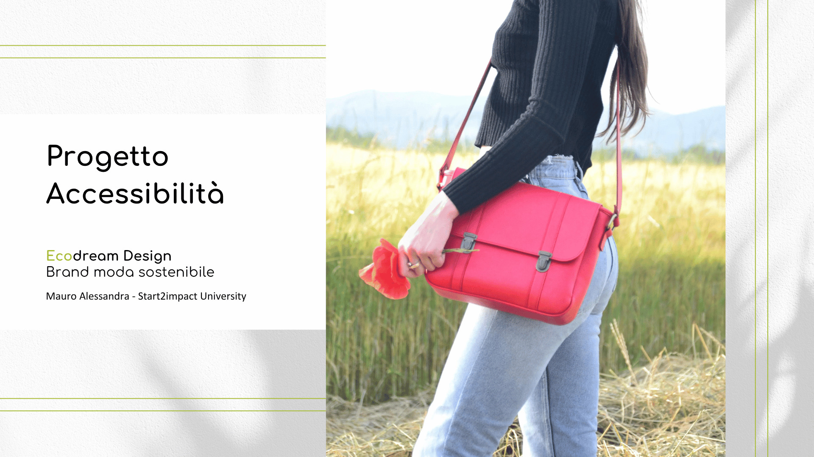
Progetto Accessibilità 1 x Ecodream Design
Prima parte del progetto di accessibilità con la ricerca dei bisogni di persone con disabilità e l'analisi dell'accessibilità di un sito.
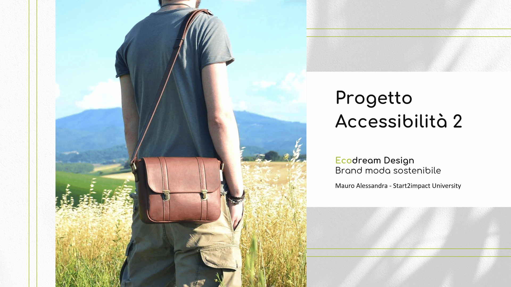
Progetto Accessibilità 2 x Ecodream Design
Seconda parte del progetto di accessibilità con la ricerca dei bisogni di persone con disabilità e l'analisi dell'accessibilità di un sito.
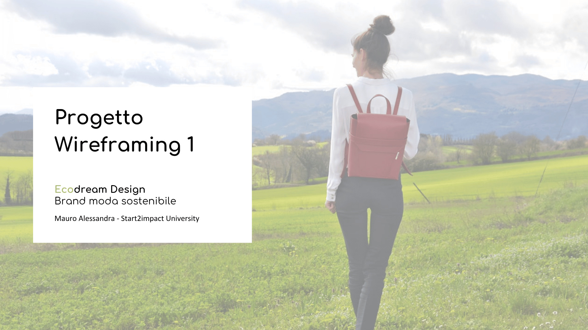
Progetto Wireframing 1 x Ecodream Design
Prima parte del progetto di wireframing con la costruzione dello "scheletro" di un sito web.
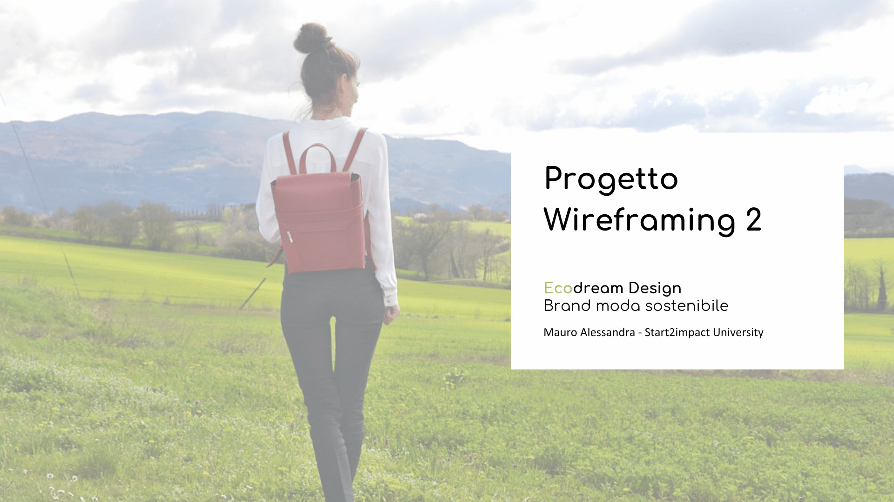
Progetto Wireframing 2 x Ecodream Design
Seconda parte del progetto di wireframing con la costruzione dello "scheletro" di un sito web.
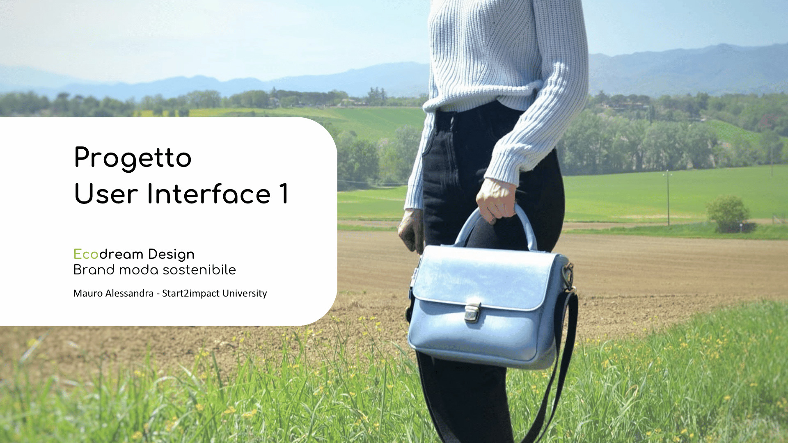
Progetto User Interface 1 x Ecodream Design
Prima parte del progetto di user interface con la realizzazione di un prototipo che simuli concretamente il modo in cui l’utente interagirà con l’interfaccia.
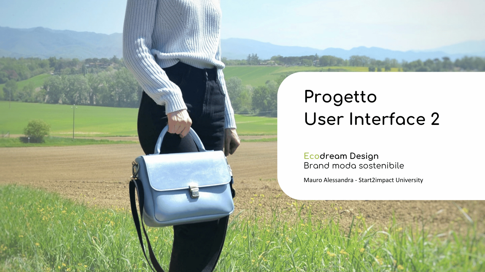
Progetto User Interface 2 x Ecodream Design
Seconda parte del progetto di user interface con la realizzazione di un prototipo che simuli concretamente il modo in cui l’utente interagirà con l’interfaccia.
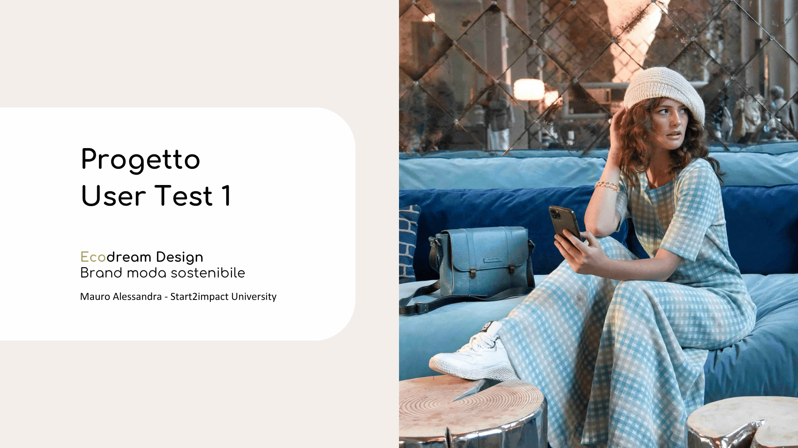
Progetto User Test 1 x Ecodream Design
Prima parte del progetto di user test con l'applicazione di metodologie specifiche per testare l'interfaccia e i flussi di navigazione.
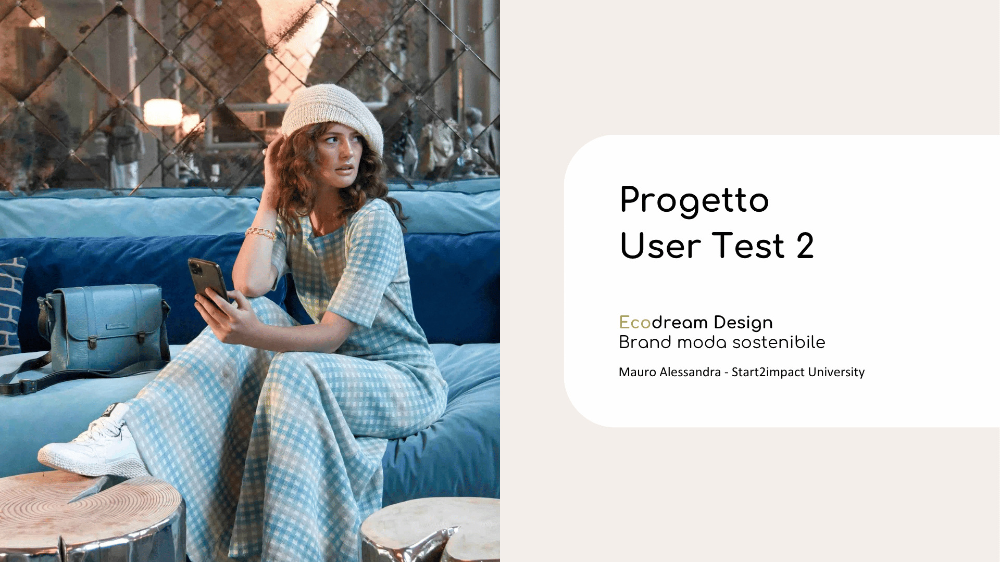
Progetto User Test 2 x Ecodream Design
Seconda parte del progetto di user test con l'applicazione di metodologie specifiche per testare l'interfaccia e i flussi di navigazione.
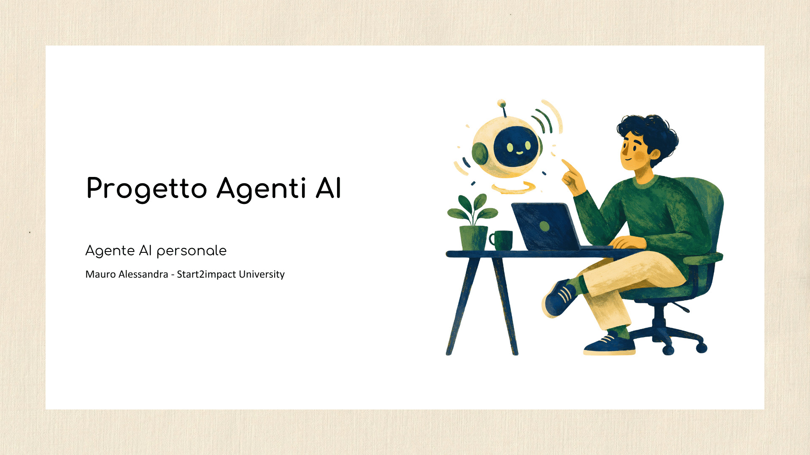
Progetto Agenti AI
Progetto agenti AI con la creazione di un agente AI no-code capace di svolgere compiti in autonomia legati alla produttività personale.
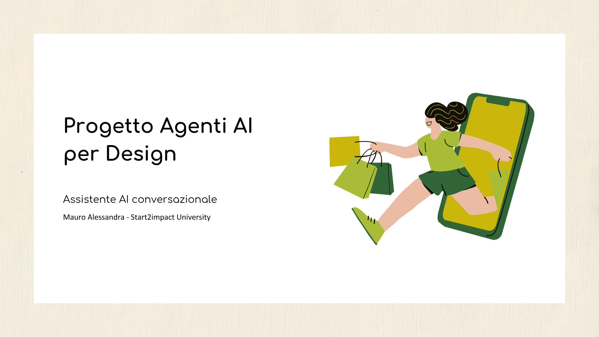
Progetto Agenti AI per Design
Progetto agenti AI per design con la progettazione di un’esperienza UX/UI mobile per un agente AI integrato in un’app o sito web reale.